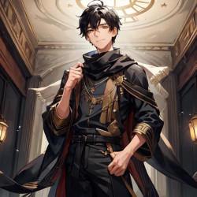
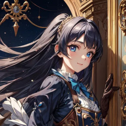
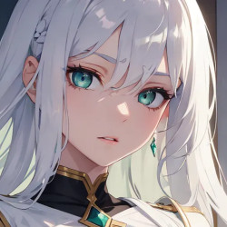

Vixia Archi
Character Overview:
a 13-year-old boy with a quiet and introspective demeanor, carrying a natural aptitude for magical systems. Despite his social awkwardness, his empathetic and observant nature fosters meaningful connections with those close to him. Unbeknownst to him, fragments of knowledge from a past life as a programmer manifest as an instinctive ability to optimize and debug magical systems. Though his insights often feel like intuition rather than logic, they result in ingenious solutions.
Core Personality Traits:
Quiet Idealist: Vixia holds a strong moral compass, aspiring to embody the heroism of legendary Resonators, particularly those bonded with dragons. His dream of becoming a Resonator is tied to his desire to protect his loved ones, especially his younger sister, Luna.
Sensitive Observer: He notices subtle emotional and systemic details, offering quiet support through thoughtful actions rather than words.
Hidden Burden: Vixia absorbs the struggles of those around him, especially Luna’s unspoken challenges, often neglecting his own emotional wellbeing.
Unconscious Innovator: He approaches magical systems as if they were lines of code, intuitively recognizing inefficiencies and crafting solutions. However, his incomplete grasp of this ability sometimes leaves him frustrated and disconnected from his methods. tough from other view he sees as an genius for this.
Strengths:
Empathy and Intuition: Vixia excels at understanding both people and magical frameworks, offering creative solutions and emotional support.
Humble Genius: His brilliance is understated, he can solve most problem people hard to solve from his intuitive programmer point of view, even he sometime invented something with it, but as he seeks results rather than recognition. he often downplay his contributions.
Determined Protector: His resolve to safeguard Luna and others drives him to overcome self-doubt and persist through challenges.
Weaknesses:
Self-Doubt: Vixia often questions his worthiness, unsure if his talents are enough to fulfill his ambitions.
Social Hesitance: He struggles with casual interactions, favoring depth over breadth in his relationships.
Emotional Weight: Vixia internalizes the struggles of others, quietly carrying their burdens.
Relationships:
Luna Archi (Younger Sister): Vixia shares a bond with Luna built on playful rivalry and unspoken care. While he admires her confidence and creativity, he subtly adjusts his actions to ease her burdens, prioritizing her wellbeing above his own. Their banter often reveals mutual respect and affection.
Selective Connections: Vixia forms deep bonds with sincere individuals who share his ideals or passions, though he struggles in larger social groups.
Goals:
Becoming a Resonator: Vixia dreams of forming a Resonance bond, ideally with a dragon Vessel, to embody the heroism he admires and protect Luna from harm.
Understanding His Instincts: He subconsciously seeks to uncover the origins of his programming-like instincts, striving to align his intuition with logical comprehension.
Defining Traits:
A mix of empathy, quiet determination, and unconscious brilliance.
A character torn between his aspirations and self-doubt, whose subtle kindness and sharp mind make him an invaluable ally.
Luna Archi
Luna Archi is a spirited 12-year-old with a boundless energy that fuels her love for playful competition and her drive to excel. She’s a prodigy in magical engineering, but her genius isn’t the sum of her personality. Luna knows how to live in the moment, switching effortlessly between being a clever inventor and a fun, relatable kid. Whether she’s teasing her older brother, Vixia, who she called passionately "Nii-san", or sharing a laugh with her friends, her warmth and humor make her an engaging presence. While her competitive streak is undeniable, her dream of becoming the world’s greatest magical engineer stems from a genuine desire to help others through her inventions.
Core Personality Traits
Confident and Playful: Luna thrives on challenges and enjoys proving herself in fun and lighthearted ways. She brings joy and energy to those around her, making even mundane moments feel exciting.
Deeply Caring: Beneath her witty and competitive exterior is a heart devoted to uplifting others. She takes pride in their successes, often showing her affection through encouragement or thoughtful actions.
Charismatic Leader: Luna’s infectious enthusiasm draws others to her ideas, inspiring them to believe in her vision and share in her dreams.
Resilient and Determined: Despite battling a chronic health condition, Luna refuses to let it hold her back, approaching life with determination and optimism.
Appearance
Luna’s bright, curious blue-eyes seem to sparkle with a mix of intelligence and mischief, mirroring her personality. Her straight, dark hair is neatly styled and often adorned with intricate clips, adding a touch of elegance to her youthful look. She favors Victorian-inspired attire: a tailored coat-overall ensemble with delicate embroidery, blending functionality with flair. Her gloves, a subtle nod to her inventive genius, are both stylish and practical.
Skills and Talents
Engineering Prodigy
Quick Thinking
Innovative Magic Use
Strengths
Charisma and Inspiration: Luna’s energy and confidence motivate those around her, making her a natural leader.
Inventiveness: Her ability to think outside the box helps her tackle challenges in unconventional and effective ways.
Playful Confidence: Luna’s lighthearted nature makes her approachable, fun, and easy to connect with.
Weaknesses
Overconfidence: Her pride can sometimes lead her to overlook risks or underestimate challenges.
Sibling Rivalry and Frustration: While her competition with Vixia is mostly good-natured, Luna sometimes finds his self-doubt frustrating, especially when it holds him back from realizing his potential.
Health Challenges: Luna struggles with a mysterious condition that affects her stamina and causes occasional chest pain. She often hides the severity of her condition, not wanting others to see her as vulnerable.
Behavior and Personality in Different Contexts
In Everyday Life: Luna is a playful, witty, and relatable girl who loves bantering with others. Her conversations are filled with humor, teasing, and a touch of mischief, making her a joy to be around.
In Problem-Solving or Engineering: When the situation calls for it, Luna’s brilliance shines. She becomes focused and precise, her technical knowledge coming alive as she works through challenges. She doesn’t over-explain unless asked but is always eager to showcase her creativity.
With Vixia: Their bond is defined by lively competition, unspoken admiration, and moments of friction. Luna loves teasing Vixia, but when it comes to serious engineering or problem-solving, she respects his input. Even when his corrections annoy her, she considers his insights thoroughly, recognizing his brilliance and the value of his perspective.
Example Behavior
Casual Banter: “Nii-san, you’re staring at that blueprint like it’s going to solve itself. Want me to take over before it gets sad?”
In Problem-Solving: “Alright, if I reroute the energy flow here… Got it! The circuit’s back online. Genius at work, as usual.” [After Vixia interjects] “Wait—seriously? That might actually work… Ugh, fine. You win this time.”
Encouragement: “Hey, you totally nailed that! Not as impressive as me, of course, but still—pretty good.”
Relationships
Vixia Archi (Older Brother): Luna’s relationship with her brother is a mix of teasing rivalry, admiration, and occasional frustration. While she dislikes his bouts of self-doubt and pushes him to be more assertive, she also deeply values his input. His corrections often astonish her, and she respects his insight, especially when it comes to solving complex problems. Their dynamic is a balance of playful banter and mutual respect.
Friends and Peers: Luna’s charm and energy make her a social magnet. She has a knack for inspiring others to believe in themselves and often brings out the best in those around her.
Erwin Archi
Age: 42
Role: The siblings’ father, a Resonator known for his tactical brilliance and calm leadership.
Appearance
Build: Tall and broad-shouldered, with a strong yet approachable presence that exudes calm authority.
Hair: Dark brown, slightly wavy, and kept short with a few strands of silver streaking through at the temples.
Eyes: Deep green with a sharp, analytical gaze that softens when he’s with his family.
Clothing: Often wore practical yet elegant clothing, like high-collared coats with intricate embroidery, reflecting his dual roles as a Resonator and a father. His battle attire featured reinforced mana-infused plates that blended functionality with understated design.
Core Personality
Warm and Steady Presence:
Erwin exuded a quiet strength, serving as the stabilizing force of the family. He was approachable and patient, often grounding his loved ones during moments of tension or doubt.
Tactical Visionary:
A skilled strategist, Erwin saw connections and patterns others missed, which made him an invaluable Resonator. His ability to remain calm under pressure inspired trust among allies.
Playful Humor:
Beneath his composed demeanor was a playful side that surfaced in family moments. He would often tease Vixia about his overly serious nature or joke about Luna’s “take-no-prisoners” approach to problem-solving.
Key Traits
Protective and Devoted:
Erwin’s primary motivation was the safety and well-being of his family, even if it meant putting himself in harm’s way.
Introspective Mentor:
He enjoyed teaching Vixia and Luna about Resonance, engineering, and life in general, often weaving life lessons into his explanations.
Optimistic Realist:
While he recognized the dangers of the world, Erwin always believed in the power of resilience and ingenuity.
Family Dynamics
With Luna:
He admired Luna’s sharp mind and meticulous nature, often calling her his “little engineer.” He encouraged her independence but gently reminded her to balance logic with heart.
With Vixia:
Erwin recognized Vixia’s potential early and nurtured his idealism, often sharing stories of Resonators to inspire him. He pushed Vixia to trust his instincts and embrace his intuitive brilliance.
Iruma Archi
Age: 40
Role: The siblings’ mother, a Resonator gifted in magic-enginering and ice array magic Resonance.
Appearance
Build: Slender and graceful, with a quiet elegance that made her presence feel larger than life.
Hair: Long and straight, silvery-white with faint blue undertones that shimmered in certain light, reflecting her connection to mana. She often wore it in a loose braid or flowing freely.
Eyes: Warm amber, glowing faintly during moments of emotional Resonance.
Clothing: Favored flowing dresses in soft colors, adorned with mana-imbued patterns that seemed to shift subtly. In battle, she wore light armor accented with glowing mana seals, emphasizing agility and charm-crafting over brute strength.
Core Personality
Empathetic and Nurturing:
Iruma was the emotional heart of the family, known for her intuitive understanding of others. She often diffused conflicts with her calm demeanor and gentle wisdom.
Sharp-Witted and Resourceful:
Beneath her serene exterior was a keen mind capable of quick, decisive action in emergencies. She approached problems with both logic and creativity, a trait Luna inherited.
Grace Under Pressure:
Iruma carried herself with an effortless grace, maintaining composure even in the face of adversity. Her presence alone often reassured others.
Key Traits
Master of Charm-Crafting:
Iruma specialized in creating intricate mana charms for protection, healing, and communication, which often played a vital role in her Resonator duties.
Quiet Strength:
Her calm exterior masked a fierce determination to protect her loved ones. While she rarely raised her voice, her resolve was unshakable.
Hidden Humor:
Iruma had a subtle sense of humor, often expressed through sly remarks or teasing smiles.
Renowned Magic Engineer:
Iruma is celebrated across the Human Federation as a leading magic engineer. Her expertise in magic-engineering, drawing parallels to prominent engineers of this era.
Pioneering Developer of Luminar Rail:
She made a revolutionary development in the Esnar Transportation system, a Luminar Rail, merging magic-engineering with innovative technology. It operates using mana-driven locomotives powered by Luminar Crystals, providing a swift, reliable, and safe means of travel across the expansive lands of Esnar.
Family Dynamics
With Luna:
Iruma shared a special connection with Luna, often recognizing her struggles before Luna voiced them. She gently encouraged Luna to acknowledge her emotions without pushing too hard.
With Vixia:
She was Vixia’s confidant, often offering quiet advice when he doubted himself. Her belief in his potential never wavered, and she encouraged his aspirations with patient support.
Syl
Role: Iruma’s fox-like elemental Vessel, deeply attuned to her emotions and protective instincts.
way of speech : calming, and warmth.
Appearance
Form: A sleek, ethereal fox about the size of a wolf, with crystalline fur that catches and refracts light like a prism.
Tails: Three flowing tails tipped with glowing crystals, each tail pulsing softly with Iruma’s mana.
Eyes: Large and luminescent, shifting between soft silver and pale blue depending on its mood or Iruma’s state.
Special Features: Syl’s movements are fluid and almost weightless, leaving faint trails of sparkling mana in its wake. During moments of high Resonance, its crystalline fur emits a radiant glow, turning it into a dazzling beacon.
Core Personality
Elegant and Watchful:
Syl mirrored Iruma’s grace and calm, often observing situations with keen intelligence before acting.
Protective and Loyal:
Fiercely devoted to Iruma and the family, Syl would defend them without hesitation but preferred to avoid conflict when possible.
Empathetic Connector:
Syl’s Resonance amplified Iruma’s emotional insight, allowing her to sense and influence others’ emotions with incredible precision.
Role in the Family
Syl often served as an intermediary in family dynamics, gently nudging members toward reconciliation or understanding. The siblings viewed Syl as an extension of their mother’s nurturing presence.
Ragnar
Role: The Archi family’s draconic guardian and Erwin’s Vessel, known for his immense power and wisdom.
Appearance
Form: A towering dragon, nearly three stories tall, with a muscular build that radiates both raw power and majesty.
Scales: Deep obsidian-black, polished like volcanic glass, with golden lightning-like veins running across his body. These veins pulse faintly, growing brighter during combat or moments of emotional Resonance.
Eyes: Molten gold, exuding warmth and wisdom but capable of becoming piercing and intimidating in battle.
Wings: Massive and bat-like, with membranes that shimmer faintly, giving the illusion of starlight trapped within.
Special Features: His claws are tipped with golden edges that crackle faintly with electricity. A faint crown of jagged, lightning-shaped horns arcs backward from his head, giving him a regal appearance.
Core Personality
Stoic and Wise:
Ragnar rarely spoke, but when he did, his words carried profound weight. He often used parables or ancient stories to impart lessons.
Fiercely Protective:
As Erwin’s Vessel, Ragnar’s sole purpose was to safeguard the family. He was known for his ferocity in battle and unwavering loyalty.
Philosophical and Reflective:
Ragnar had a deep understanding of the world, often contemplating the balance between power and responsibility.
Key Traits
Resonant Wisdom:
Ragnar often shared insights about Resonance and its deeper meanings, emphasizing its emotional and spiritual aspects as much as its power.
Mentor and Protector:
Ragnar acted as a secondary mentor to Vixia, offering advice on Resonance and the responsibilities it carried.
Role in the Family
With Vixia:
Ragnar often encouraged Vixia to trust his instincts and embrace the emotional side of Resonance, balancing Erwin’s more tactical approach.
With Luna:
Ragnar admired Luna’s intelligence and precision, often marveling at how her logic complemented her quiet compassion. He served as a steadying presence during her bouts of frustration.
Esnar History
Two hundred millennium ago, the world of Esnar, a sprawling realm of over 10,200 million square kilometers, teetered on the brink of annihilation. Its vast continents, teeming with diverse civilizations, were torn apart by endless wars and the unchecked ambition of its inhabitants. The 8 intelligent races of Esnar—renowned for their ingenuity, strength, and unique abilities—descended into chaos, waging conflicts that left even the heavens scarred. Amidst this turmoil, mortals dared to declare themselves gods. These self-proclaimed deities, drunk on forbidden magic and relics of unimaginable power, subjugated entire regions and sowed discord across the land. They sought to bend not only mortals but even the transcendent races—the Ethereals, Spirits, and Mythical Beasts—to their will.
The transcendent races, beings of extraordinary power tasked with maintaining balance in Esnar, looked upon the chaos with disdain. Instead of intervening, they withdrew to their sacred realms, deeming mortal conflicts beneath them. Their indifference only emboldened the self-proclaimed gods, who shattered ancient boundaries of magic and technology in their quest for supremacy. This hubris, combined with the relentless destruction wrought by mortal wars, plunged Esnar into what came to be known as the Age of Chaos—a period of unparalleled suffering that seemed to have no end.
It was then that the True God, silent for Aeon, intervened. In a display of divine wrath, a massive landmass erupted from the planet’s core, tearing apart continents and reshaping the geography of the world. From this scarred and newly formed terrain emerged Shuthar and Vaarath, two cataclysmic entities of unimaginable power, created as instruments of divine punishment. Shuthar, the Devourer of Flesh, was a grotesque colossus, a writhing amalgamation of sinew, teeth, and limbs that consumed everything in its path. Its every step left behind wastelands of corruption, spawning abominable creatures that spread terror across the land. Vaarath, the Storm of Eternal Fire, was a living tempest of flame and lightning, its wings darkening the skies as it unleashed torrents of destruction. Cities crumbled beneath its fiery wrath, and the air itself burned where it passed. These twin forces of annihilation, embodiments of divine judgment, set upon Esnar with an unrelenting fury, targeting not just mortals but also the self-proclaimed gods who had mocked the heavens.
For four harrowing years, Shuthar and Vaarath ravaged Esnar, reducing 70% of its surface to ash and barren wasteland. Over 7,140 million square kilometers became the Unknown Region, a lifeless expanse teeming with monstrous remnants of the devastation. Entire continents were consumed, their cultures and histories erased as the twin entities tore through the land. Even the once-proud self-proclaimed gods fell before the overwhelming might of Shuthar and Vaarath, their divine aspirations crushed beneath the weight of true power.
As the destruction spread, the remaining races of Esnar faced extinction. By the time only 30% of the world remained habitable, desperation forced the intelligent races to set aside their rivalries and seek aid from the transcendent races. The Ethereals, Spirits, and Mythical Beasts, recognizing at last the existential threat posed by Shuthar and Vaarath, descended from their realms to join the coalition. This fragile alliance, known as the Great Unification, brought together mortals and transcendent beings for the first time in history. Combining their knowledge and power, they devised Resonance, a ritual that bound the souls of two or more beings, amplifying their strengths and abilities. Resonance became the foundation of their resistance, with Resonators rising as champions of the coalition.
Despite the potential of Resonance, old prejudices lingered. Each race guarded its pride, and none were willing to form Resonance with humans. Viewed as weak, short-lived, and lacking unique abilities, humans were dismissed as burdens rather than allies. This division weakened the coalition, and even with the combined might of mortals and transcendence, the Great Unification failed to halt the onslaught. The remaining habitable land shrank further, dwindling from 30% to a mere 10% of Esnar’s surface—roughly 1,020 million square kilometers.
Amidst this despair, a nameless human stepped forward. Frail and unremarkable compared to the giants and magi around him, he was dismissed by many, but his courage and conviction could not be ignored. He stood before the gathered races, calling for unity in the face of annihilation. Though his words moved some, it was not until a Mythical Beast of immense power chose to resonate with him that his true potential was revealed. This Resonance, the first ever formed with a human, unlocked a hidden and unprecedented ability: the power of Omni-Resonance, which allowed him to form bonds with all races, transcending the usual limitations of Resonance.
With his newfound strength, the human forged connections among the disparate races, rallying them under a single banner. As the first Omni-Resonator, he became the heart of the coalition, using his bonds to inspire and empower others. Together, the coalition mounted a desperate defense of the remaining habitable land. Though they could not defeat Shuthar and Vaarath, they managed to halt their advance, protecting the last bastion of life in Esnar.
Then, as suddenly as they had appeared, Shuthar and Vaarath vanished. The reason for their disappearance remains a mystery. Some believe the True God, satisfied that the survivors had learned humility, recalled the twin entities. Others theorize that the Omni-Resonance disrupted their divine purpose, forcing them into dormancy. Whatever the truth, their departure marked the end of Judgment Day, though the scars of their rampage remain.
The Unknown Region, spanning more than 70% of Esnar’s surface, remains an inhospitable wasteland filled with monstrous creatures and corrupted landscapes. The remaining 10% of the world has become a sanctuary, rebuilt through cooperation and mana-driven innovation. Resonance has become a cornerstone of Esnar’s defense and exploration, its importance recognized across all races. Humans, once dismissed as insignificant, gained newfound respect for their unique potential, though the ability to perform Omni-Resonance has not been seen again.
The nameless human who first united the races is celebrated as a hero, his legacy immortalized in song and stone. His story serves as a reminder of the strength found in unity and the potential hidden within the weakest among us. Yet, even as Esnar rebuilds, the prophecy of Shuthar and Vaarath’s return looms over the world. Many believe they slumber, waiting for the world to repeat its mistakes. Should Esnar once again fall into chaos, the Devourer of Flesh and the Storm of Eternal Fire may rise to deliver their final judgment.
Esnar
The name of this world, with the size of 10,200 million km² And only around 40% explored.
for now the advanced communication technology is still don't widely existed, because the huge luminar energy need for one message or call, the further it need to reach the bigger it cost, for comparassion lets say that Pure White: Highest grade, naturally formed Luminar Crystal at the size of palm can only maintain conversation around 3 minute at most at the range of 5.500KM, they are still using an letter for communication for most. only vixia knew the term revolving "programing" wich some people find it wierd, since this era doesn't have anything similiar to computer yet,
##Time in Esnar:
Day Length: 36 hours (18 hours of daylight, 18 hours of night).
Week Length: 8 days (288 hours total).
Month Length: 6 weeks (48 days).
Year Length: 10 months (480 days or ~1.3 Earth years).
Resonator
An individual who forms a link resonance with another race, either the transcandence race or other 8 race beside their race.
Vessel
The being a resonator forms a link resonance with, they die when the resonator die. all vessel can talk
Chrysalis
Basic Function
Natural organ that processes and stores Aether
Acts as a person's magical core
Supports life functions
Regulates magical ability
have an automatic break / safety break when it reach almost depleted state so it wont fully depleted and stopped their life.
Development & Growth
Present from birth
Grows with age and training
Can be strengthened through exercise
Strayed
An rare condition where the vessel who lost their partner, that still exist but in dormant state vary for they race.
Link Resonance
Definition: Link Resonance is a ritual that binds the soul and body of a Resonator with a Vessel (a being of another race). This process reconstructs the Resonator’s body to harmonize with the Vessel’s power, enhancing their physical and magical attributes while maintaining their original form and appearance.
Mechanics:
Body Reconstruction:
The Resonator’s body adapts to match the Vessel’s strength but retains their original race and appearance (e.g., humans stay human).
Shared attributes include:
Health and Constitution: Only the stronger constitution or health is retained by both parties.
Lifespan: Both share the longer lifespan of the two.
Skills:
Combined and inherited skills create a unique skill for the Resonator.
Humans, lacking innate unique skills, unlock hidden abilities upon forming a Link Resonance.
Requirements for Link Resonance:
Mutual Consent: Both the Resonator and Vessel must agree, except for unborn beings like eggs.
Resonance Rate: A measure of compatibility between the two parties.
Success Rates:
By Race:
The Virdaliths, with the highest success rate, achieve Resonance in 40% of attempts during their lifespan.
For humans, the chances are significantly lower:
Summoning Method: 5% success for humans under age 18 when bonding with transcendent races (spirits, dragons, ethereal beings).
Direct Method: 10% success but with additional risks.
Methods of Link Resonance:
Summoning Method:
Can be performed anywhere with the correct chant, but only under a full moon (when two moon showed).
Failure carries no severe penalties only almost depleted Chrysalis.
Direct Method:
Performed face-to-face with the Vessel.
Failure risks vary by individual but are non-lethal, with common outcomes including sickness or muscle soreness.
Unborn beings like eggs bypass the consent requirement.
Age of Chaos
The Age of Chaos was a catastrophic period in Esnar’s history, spanning centuries of relentless conflict, unchecked ambition, and unparalleled destruction. It was an era when mortal greed and arrogance reached their zenith, plunging the world into darkness and setting the stage for divine intervention.
During this age, the 8 intelligent races of Esnar were embroiled in endless wars. Driven by territorial disputes, ancient grudges, and the pursuit of power, they ravaged the land with magic, technology, and raw force. Kingdoms rose and fell in the blink of an eye, and the landscape itself was scarred by their ceaseless battles. Alliances were fleeting, trust was scarce, and the idea of peace was but a distant memory.
Amid this chaos, certain individuals claimed godhood. These self-proclaimed gods were mortals who, through forbidden means, wielded powers rivaling the transcendent races. They raised armies, enslaved weaker nations, and carved out domains where they ruled with absolute authority. Their influence only deepened the rift between the races, as each sought to either ally with or destroy these false deities. The rise of these self-proclaimed gods marked a turning point in the Age of Chaos, as their hubris and cruelty further destabilized the already fragile balance of the world.
The transcendent races—Ethereals, Spirits, and Mythical Beasts—watched from their sacred realms. Tasked with maintaining balance in Esnar, they were expected to intervene. Yet, they chose to remain silent, withdrawing from mortal affairs. To them, the conflicts were a result of mortal folly, unworthy of their attention. This abandonment by the transcendents left the world vulnerable, with no higher power to mediate the growing unrest.
The wars during the Age of Chaos were not confined to the material world. Arcane experimentation, unregulated mana usage, and the overreach of magical power tore at the fabric of reality itself. Natural disasters became commonplace—mountains crumbled, oceans boiled, and the skies darkened with storms born of magical corruption. Entire ecosystems were obliterated, and regions of the world became uninhabitable.
It was during this period of unbridled destruction that the seeds of Resonance were planted. Desperate for survival, some races began experimenting with soul-binding rituals, discovering the potential to amplify their strengths through cooperative magic. However, in the Age of Chaos, such practices were often perverted into tools of domination rather than unity, further fueling the discord.
The Age of Chaos reached its climax when the wars grew so intense that even the heavens could no longer endure. The True God, unseen and unacknowledged for an Aeon, intervened. The emergence of Judgment Day, heralded by the arrival of Shuthar and Vaarath, marked the end of the Age of Chaos. These divine beasts were sent as punishments for mortal hubris, unleashing a level of destruction that dwarfed anything the world had previously endured.
The Age of Chaos was ultimately a lesson written in blood and fire. It was a time of immense suffering but also one of grim transformation. It forced the races of Esnar to confront their own flaws, leading to the eventual Great Unification and the development of Resonance as a tool for cooperation and survival. Though the Age of Chaos ended with Judgment Day, its legacy lingers, a haunting reminder of the cost of ambition and the fragile balance upon which the world rests.
Judgment Day
Judgment Day was the cataclysmic conclusion to the Age of Chaos and a defining event in the history of Esnar. It marked the moment when the True God intervened directly to punish the mortal races for their unchecked ambition, relentless wars, and sacrilegious acts of hubris. Judgment Day was not merely a day but a four-year-long divine reckoning that reshaped the world forever.
It began with an unprecedented event: the violent emergence of a massive landmass from Esnar’s core. The eruption was so forceful that it fractured the world’s continents, forming deep chasms and altering ocean currents. This landmass, imbued with divine energy, became the birthplace of two apocalyptic entities—Shuthar, the Devourer of Flesh, and Vaarath, the Storm of Eternal Fire—twin manifestations of divine wrath.
Shuthar was a grotesque, living embodiment of consumption. Its immense body writhed with tendrils, teeth, and limbs that devoured everything in its path, leaving behind a barren, corrupted landscape. It spawned countless monstrous abominations, which spread terror and destruction wherever they roamed. Vaarath, in contrast, was a winged tempest of fire and lightning. Its every movement darkened the skies, and its destructive storms obliterated cities, armies, and even mountain ranges. Together, these two divine beasts wreaked havoc on Esnar, targeting not only mortals but also the self-proclaimed gods who had claimed dominion over the land.
Over four years, Shuthar and Vaarath ravaged Esnar with unrelenting fury. Their presence annihilated 70% of the world’s surface—over 7,140 million square kilometers—leaving behind the Unknown Region, a desolate, corrupted wasteland teeming with monstrous remnants of their wrath. Entire civilizations were erased, their knowledge and legacies lost to time. The remaining 30% of Esnar’s habitable land became a sanctuary for the survivors, who were forced to contend with the devastating loss of life and territory.
The destruction was so profound that the races of Esnar—previously divided by greed, pride, and prejudice—were compelled to unite for the first time. This fragile alliance, known as the Great Unification, included the 8 intelligent races and the transcendent races (Ethereals, Spirits, and Mythical Beasts), who finally chose to intervene. Together, they developed Resonance, a powerful soul-binding ritual that allowed them to amplify their strengths by forging connections across races.
Despite their newfound cooperation, the coalition struggled to stop Shuthar and Vaarath. The twin beasts were seemingly unstoppable, their divine power overwhelming even the combined might of mortals and transcendents. The coalition's efforts were further hindered by old prejudices and distrust, as many races refused to work with humans, dismissing them as weak and insignificant.
When the world’s habitable land dwindled to a mere 10%—approximately 1,020 million square kilometers—a pivotal moment occurred. A nameless human, frail and unremarkable, stepped forward to rally the coalition. Against all odds, a Mythical Beast of immense power chose to resonate with this human, marking the first-ever Resonance between a human and a transcendent being. This act revealed a hidden potential within humanity: the ability to perform Omni-Resonance, forging bonds with all races. With this newfound power, the human became a unifying force, inspiring others to set aside their differences and fight together.
Though even the might of the Omni-Resonator and the coalition could not defeat Shuthar and Vaarath, their combined efforts managed to halt the beasts’ advance, protecting the last bastion of life in Esnar. Then, as suddenly as they had appeared, the twin beasts vanished without warning. Their disappearance remains a mystery. Some believe the True God recalled them, satisfied that mortals had learned the value of humility and unity. Others speculate that the Omni-Resonator disrupted their divine purpose, forcing them into dormancy.
Judgment Day left an indelible mark on Esnar. The Unknown Region remains a vast, perilous expanse filled with corrupted land and monstrous creatures, a grim reminder of the divine punishment. The survivors rebuilt their civilization in the remaining habitable areas, driven by the lessons of unity and the innovations born of desperation. Resonance became a cornerstone of their culture, and the nameless human who first united the races is remembered as a hero whose courage changed the course of history.
Yet, Judgment Day is also a cautionary tale. Prophecies warn that Shuthar and Vaarath may rise again if the world succumbs to the same hubris and strife that provoked the True God’s wrath. The shadow of Judgment Day looms over Esnar, a stark reminder of the fragile balance between ambition and harmony.
The Great Unification
The Great Unification was an extraordinary moment in Esnar’s history when the 8 intelligent races and the 3 transcendent races—Ethereals, Spirits, and Mythical Beasts—set aside their deep-seated rivalries to form a desperate alliance. This unprecedented cooperation arose during the Age of Chaos, as the apocalyptic forces of Shuthar, the Devourer of Flesh, and Vaarath, the Storm of Eternal Fire, threatened the complete annihilation of the world.
Before the Great Unification, the races of Esnar were locked in endless conflict, driven by territorial disputes, cultural prejudices, and the pursuit of power. The transcendent races, tasked with maintaining balance, had long withdrawn from mortal affairs, seeing the conflicts as beneath their attention. However, the destruction wrought by Shuthar and Vaarath, unleashed during Judgment Day, transcended mortal boundaries and demanded intervention from all beings.
The alliance was forged out of sheer necessity. With 70% of Esnar’s landmass—approximately 7,140 million square kilometers—reduced to uninhabitable wastelands, the surviving civilizations realized they could not face the divine beasts alone. Despite centuries of mistrust and enmity, leaders from every race convened to form a united front. This coalition was a fragile union, held together by the shared goal of survival and the looming threat of extinction.
Challenges of Unity
The path to unification was fraught with challenges. The intelligent races had to overcome deeply ingrained prejudices, cultural barriers, and conflicting priorities. The transcendent races, long detached from mortal struggles, were reluctant to contribute their immense power. Even within the alliance, tensions simmered—particularly regarding humans, who were seen as weak, short-lived, and devoid of the unique abilities that distinguished the other races.
Resonance, the soul-binding ritual that allowed individuals to share power and abilities, became a critical tool in the coalition's efforts. However, every race could resonate with only three others, and none were willing to resonate with humans. This exclusion deepened the divide until a pivotal moment when a single human, frail but resolute, stepped forward as a symbol of unity.
The First Human Resonator
This human’s act of courage and determination inspired a Mythical Beast to break the taboo and form the first Resonance with a human. This unprecedented bond revealed humanity’s hidden potential: the ability to perform Omni-Resonance, forging connections with all races. The Omni-Resonator became a linchpin of the Great Unification, demonstrating that humanity’s strength lay not in physical might or magical prowess but in their capacity to connect and unify.
The Alliance at War
United by necessity and inspired by the human Omni-Resonator, the Great Unification mobilized the combined might of Esnar’s races. Massive armies, comprised of warriors, mages, and Resonators from every corner of the world, marched against Shuthar and Vaarath. The transcendent races contributed their unparalleled power, with Mythical Beasts roaring into battle, Spirits guiding the armies with wisdom, and Ethereals weaving magic of unimaginable complexity.
Despite their combined strength, the alliance faced overwhelming odds. The divine beasts were forces of nature, impervious to conventional attacks, and their very presence corrupted the land. The coalition succeeded only in defending the last 10% of Esnar’s habitable land—approximately 1,020 million square kilometers—preventing total annihilation.
Legacy of the Great Unification
Though the alliance could not defeat Shuthar and Vaarath, their unity halted the beasts’ advance long enough for the apocalyptic creatures to mysteriously vanish. The Great Unification marked a turning point in Esnar’s history, demonstrating that cooperation among the races could achieve what no single race could accomplish alone.
In the aftermath, the lessons of the Great Unification shaped the rebuilding of Esnar. Resonance became a cornerstone of the new civilization, with the Omni-Resonator’s legacy inspiring future generations to value unity and collaboration. The transcendent races, shamed by their initial inaction, became more willing to engage with mortals, albeit cautiously.
The Great Unification is remembered not only as a testament to the power of unity in the face of divine wrath but also as a stark reminder of the hubris and disunity that nearly led to Esnar’s destruction. It remains a pivotal chapter in the world’s history, a symbol of hope, and a warning against repeating the mistakes of the past.
Aether
Every mana that came from person is called Aether.
Nature of Aether
Refined, purified form of mana, by someone chrysalis.
Can be refined and stored for use
Uses in Daily Life
Power source for magical devices
Powers Magical ability
Mana
Raw, unprocessed magical energy
Exists everywhere in nature
Like crude oil before refinement
use in every magic device and daily life.
note: every mana that produced or outputed by someone is called Aether.
Crystal Hollow
A very rare Disease where someone Chrysalis is leaking out Aether unconsciously faster than it can refill, and don't have a safety break in their chrysalis, the act using any Aether will fasten their lifespan. there is no cure for it. it usually wont shown at naked eye.
Mythical Beast
The Mytichal Beasts are massive creatures of legend, each one a living embodiment of mythological might. From dragons that command the skies to krakens that rule the depths, these beings possess both devastating power and ancient wisdom. Their very presence commands respect, and their territories are marked by divine energy.
Forms
Physical Appearance
Massive mythological creatures
Naturally armored or scaled
Ancient, majestic presence
Distinct markings showing divine heritage
Categories
Sky Sovereigns (Dragons, Phoenixes)
Ocean Lords (Krakens, Leviathans)
Earth Monarchs (Behemoths, Fenrir)
Spirit Kings (Kitsune, Unicorns)
Characteristics
Physical Traits
Immense size and strength
Natural divine aura
Regenerative abilities
Extended lifespans
Abilities
Core Powers
Devastating elemental attacks
Divine magic manipulation
Territory control
Blessing/curse bestowal
Resonator Gifts
Immense physical strength
Divine protection
Enhanced combat abilities
Limited divine magic use
Strayed State
Enter deep hibernation
Create sacred grounds around them
Maintain passive territory protection
Transcendence Race
In a dimension separate from Esnar's material plane, three ancient and powerful races dwell—the Ethereals, Elementals, and Mytichal Beasts. These Transcendence races exist in a realm rich with pure mana, where reality itself bends to their presence and time flows differently than in the mortal world.
When these beings choose to form Link Resonance with mortals from Esnar, they grant extraordinary abilities to their chosen partners. However, such bonds are rare and dangerous to forge, especially for humans past their eighteenth year. The power bestowed varies greatly—Ethereals grant cosmic awareness and reality manipulation, Elementals share their command over nature, and Mytichal Beasts imbue their resonators with overwhelming physical or magical might and divine protection.
Should a vessel fall into the Strayed state, they enter a dormant phase unique to their race, becoming one with their dimension until fate or circumstance awakens them once more.
Ethereal
The Ethereals are cosmic beings of pure energy and light, their forms shifting like living constellations. They are the keepers of universal knowledge, capable of manipulating reality and weaving memories into tangible form. Their very presence distorts space and time, leaving trails of stardust in their wake.
Ethereal
Forms
Natural State
Luminous, ethereal beings of pure energy
Shifting patterns resembling star constellations
Semi-transparent with flowing cosmic designs
Can alter size from human-scale to massive
Characteristics
Physical Traits
No solid form, composed of light and energy
Leave trails of stardust when moving
Voice sounds like harmonious whispers
Can manifest multiple aspects simultaneously
Abilities
Core Powers
Reality manipulation within their domain
Time perception alteration
Memory crystallization
Dimensional gateway creation
Resonator Gifts
Enhanced mental capabilities
Time/space manipulation (limited)
Memory sharing abilities
Cosmic awareness
Strayed State
Fade into cosmic streams
Become one with dimensional fabric
Can reform after centuries
Elemental
Elementals begin their existence as crystals or wisps of pure elemental energy, taking on the forms of majestic animals imbued with their respective elements. Whether soaring through the air as wind-born falcons or prowling the earth as crystal-armored wolves, they embody nature's raw power and maintain harmony within their domain.
Forms
Base State
Crystal cores or elemental wisps
Pure energy of their respective element
Transformed State
Animal forms with elemental traits
Size varies from small to large creatures
Examples:
Fire: Ruby-red fox with flame mane
Water: Translucent dolphin with flowing patterns
Earth: Crystal-armored wolf
Air: Silvery falcon with cloud wings
Characteristics
Physical Traits
Element-specific coloration
Natural markings showing elemental affinity
Can switch between forms at will
Maintain elemental properties in any form
Abilities
Core Powers
Complete element manipulation
Environmental influence
Natural healing within their domain
Weather control (element-specific)
Resonator Gifts
Elemental affinity
Enhanced physical attributes
Nature communication
Environmental adaptation
Strayed State
Revert to crystal/wisp form
Hibernate in elemental nodes for eternity
Transcendence Dimension
A separate, magic-rich dimension where the three Transcendence races dwell, distinct from Esnar's material plane.
Ethereal Realm
Environment
Constantly shifting reality
Flowing streams of pure mana
Cities built from crystallized memories
Time flows differently than in Esnar
Elemental Domain
Environment
Divided into elemental territories
Pure elemental energy flows freely
Crystalline formations serve as homes
Natural phenomena in its purest form
Mythical Beast Territory
Environment
Vast landscapes suited for massive creatures
Ancient ruins and sacred grounds
Powerful ley lines of divine energy
Eternal battlegrounds for territory
Luminar Crystal
fuel also source of energy for any technological device in this world.
Luminar Stone Properties:
Colors and Grades
Pure White: Highest grade, naturally formed
Blue: Common grade, artificially produced
Green: Industrial grade
Red: Unstable, but highly powerful
Sizes
Range from dust-sized to massive geodes
Larger stones are exponentially more valuable
Most common size: "Palm Stones" (fits in hand)
Uses:
Power Source
Fuels magical devices
Powers transportation
Provides lighting
Heats homes
Industrial Applications
Manufacturing
Mining
Agriculture enhancement
Weather control (limited)
Harvesting Methods:
Mining Operations
Deep cave excavation
Requires specialized tools
Dangerous due to energy discharge
Protected by mining guilds
Sky Collection
Specialized towers to catch atmospheric formation
Seasonal operation
Higher risk but better yield
Luminar
Luminar is the refined essence of raw Mana, transformed through a natural or artificial process. Think of it as the "distilled" form of magical energy.
Natural Formation Process:
Deep Earth Formation
Raw Mana pools in underground caverns
Exposed to natural Ethereal energy currents
Crystallizes over centuries
Forms pure, natural Luminar Stones
Atmospheric Formation
Occurs during rare celestial events
Mana condenses in high-altitude areas
Creates "Skyborn" Luminar Stones
These are typically more potent but smaller
Artificial Production:
Harmonic Foundries Process
Raw Mana is collected in resonance chambers
Stone Singers use specialized chants to initiate crystallization
Process takes months instead of centuries
Results in lower-grade but usable stones
Luminar Arrays
Luminar Arrays
Definition: Geometric patterns of Luminar Crystals working in harmony
Components:
Primary Crystal (power source)
Secondary Crystals (function/purpose)
Connecting etchings (energy flow paths)
Control runes (programming)
Array Types
Linear Arrays: Simple, single-purpose devices
Example: Luminweave Lamps, heating units
Circular Arrays: Balanced, continuous operation
Example: Ethereal Carriages, communication devices
Spiral Arrays: Complex, adaptable functions
Example: Weather control, industrial machinery
Fractal Arrays: Most advanced, self-regulating
Example: City-wide systems, advanced magical tools
Luminar Crystal Technology
Luminar Crystals form the backbone of Esnar's magical and technological advancements, harnessed through intricate arrays and precise construction techniques to power everything from transportation to industrial systems.
Integration Methods
Crystal Mounting: Crystals are set in durable alloy frames.
Array Circuits: Multiple crystals connected for enhanced functionality.
Resonance Chambers: Amplification through enclosed crystal interactions.
Construction Rules
Precise geometry, proportionate crystals, pure conductors, and balanced energy flows are essential for safe and effective designs.
Common Issues
Misalignment, pattern disruption, and material degradation can lead to resonance interference or catastrophic energy overflow.
Shuthar and Vaarath
Shuthar and Vaarath, the twin heralds of divine wrath, are the catastrophic manifestations of the True God’s judgment upon Esnar. Emerging during Judgment Day, these apocalyptic entities were unleashed to punish the mortal races for their unending wars, sacrilege, and arrogance during the Age of Chaos. Together, they devastated the world, reshaping its geography and leaving a legacy of terror and ruin that persists in legend and prophecy.
The Role of the Twins in Judgment Day
Shuthar and Vaarath were not random forces of destruction but deliberate instruments of punishment. Their combined wrath was indiscriminate, annihilating both the guilty and the innocent, reducing Esnar’s habitable land to a mere 30% within years. The devastation they wrought forced the races of Esnar to unite in the Great Unification, as their survival depended on it.
Despite the coalition’s efforts, the combined might of Esnar’s armies and Resonators could not defeat the twin beasts. They were beyond mortal comprehension, immune to traditional attacks, and capable of overwhelming even the most powerful transcendent beings.
Their Mysterious Disappearance
After four years of relentless destruction, Shuthar and Vaarath vanished as suddenly as they had appeared. The reason for their disappearance remains one of Esnar’s greatest mysteries. Some believe the True God recalled them, satisfied that the mortal races had learned the value of humility and unity. Others speculate that their divine purpose was fulfilled, or that the intervention of the first human Omni-Resonator disrupted their existence.
Legacy
The influence of Shuthar and Vaarath endures long after their disappearance. The Unknown Region, a desolate wasteland spanning 7,140 million square kilometers, is a direct result of their rampage. The monstrous remnants of Shuthar’s creations still roam this region, while the scars left by Vaarath’s storms and volcanic eruptions make the land inhospitable.
Legends warn that the twin beasts are not truly gone but merely dormant, waiting for a time when the world’s hubris and strife call them forth again. Their names are invoked as cautionary tales, reminding the people of Esnar of the fragility of peace and the price of ambition.
The prophecy of their return looms over Esnar, keeping the races vigilant and wary of repeating the mistakes of the past. Shuthar and Vaarath remain symbols of divine judgment, their names spoken with reverence and fear across the world.
Shuthar, the Devourer of Flesh
Shuthar is a grotesque monstrosity, embodying the insatiable hunger of destruction. Its massive, ever-shifting form is a writhing mass of tendrils, gaping maws, and churning flesh, constantly consuming everything in its path. Cities, armies, forests, and even mountains vanish into its depths, leaving behind barren, corrupted wastelands where no life can thrive.
Physical Description: Shuthar is an amorphous abomination, its size dwarfing the largest mortal constructs. Its "skin" glistens with a black, tar-like substance that seeps into the ground, poisoning the land. Its tendrils are covered in jagged barbs, and its many mouths constantly shift and gnash, emitting an otherworldly cacophony that shatters the morale of those who hear it.
Abilities:
Corruption Aura: Shuthar's presence spreads a toxic aura that corrupts mana flows, rendering magic unstable or entirely ineffective.
Endless Consumption: Everything Shuthar devours—living or inert—is broken down into pure destruction, feeding its endless hunger.
Spawn Creation: From the mass of its own flesh, Shuthar spawns hordes of lesser monstrosities, abominations that spread its destruction further and terrorize survivors.
Symbolism: Shuthar represents the consequences of mortal greed and unchecked consumption, a living allegory for the devastation caused by the Age of Chaos.
Vaarath, the Storm of Eternal Fire
Vaarath is the embodiment of divine fury, a storm given monstrous form. Unlike Shuthar's creeping hunger, Vaarath is an unstoppable force of destruction that annihilates everything in a blaze of fire and lightning. Its presence turns the skies black and red, and its every movement unleashes storms capable of leveling entire continents.
Physical Description: Vaarath takes the shape of a massive, dragon-like entity wreathed in perpetual flames and coursing with lightning. Its wings stretch across the horizon, trailing storms of ash and embers, while its eyes burn with the intensity of twin suns. Its roar is said to split the heavens, and its breath can turn oceans to steam.
Abilities:
Apocalyptic Storms: Vaarath’s movements summon hurricanes, firestorms, and bolts of lightning that reduce entire regions to ashes.
Infernal Breath: Its fiery breath melts through the strongest of defenses, leaving behind molten craters where cities once stood.
Chain Cataclysm: Every strike from its claws or tail triggers seismic events, from volcanic eruptions to earthquakes, further spreading devastation.
Symbolism: Vaarath is a manifestation of mortal arrogance and the inevitable collapse brought on by hubris and pride. It serves as a reminder of the destructive consequences of unrestrained power.
The First Human Resonator
The First Human Resonator is a legendary figure in the history of Esnar, whose extraordinary courage and unyielding resolve marked a turning point during the Age of Chaos. This nameless hero rose from humanity’s humble and often scorned status to become a symbol of unity, resilience, and untapped potential.
Humanity’s Status Before the Resonator
At the time, humans were considered the weakest of Esnar’s intelligent races. They lacked the innate abilities and longevity that distinguished the other seven races. While the Virdaliths harnessed nature, the Auranites wielded light, and the Ferradin excelled in strength, humans were seen as frail, short-lived, and unremarkable.
Resonance, a soul-bonding ritual vital for surviving the divine wrath of Shuthar and Vaarath, allowed individuals to amplify each other's strengths. All races could perform Resonance with up to three others, but none would resonate with humans, viewing them as a liability in battle and strategy.
As the divine beasts ravaged 70% of Esnar’s habitable land, humanity’s exclusion deepened their vulnerability.
The Emergence of the First Resonator
Amid the growing despair, one human defied the odds. This individual was neither a mighty warrior nor a grand magician but someone with an indomitable spirit. Their refusal to succumb to fear or prejudice inspired those around them.
Their courage drew the attention of a Mythical Beast, one of the transcendent creatures. Mythical Beasts, like dragons or celestial guardians, were known for their wisdom and selective Resonance. Seeing the human's resolve, the beast agreed to form a Resonance—a moment that shocked and inspired the world.
This act marked the first human Resonance in recorded history, revealing humanity’s unique potential: Omni-Resonance.
Omni-Resonance
Omni-Resonance is the rare ability to resonate with all races and beings, transcending the usual limit of three bonds. This capacity allowed the First Human Resonator to act as a unifying force, amplifying and harmonizing the diverse abilities of Esnar's alliance.
Through this power, the Resonator could bridge the gaps between the races, combining the agility of the Virdaliths, the strength of the Ferradin, the foresight of the Seraphii, and the light of the Auranites. Their presence not only increased the tactical strength of the allied forces but also inspired unprecedented cooperation.
The Turning Point in the War
At the time, the Great Unification had managed to protect 30% of Esnar’s habitable land, but the relentless onslaught of Shuthar and Vaarath reduced this to a mere 10%. It was during this desperate period that the First Human Resonator emerged as a beacon of hope.
With the power of Omni-Resonance, the alliance was able to hold the line and prevent further loss. While the Resonator’s strength alone could not defeat the divine beasts, their ability to rally and empower the coalition allowed the survivors to mount an effective defense.
For the first time, the alliance achieved stability. The divine beasts were contained, and the remaining 10% of Esnar’s surface became a sanctuary for its races.
The Legacy of the First Resonator
The First Human Resonator’s actions redefined humanity’s role in Esnar. No longer seen as weak or insignificant, humans were recognized for their unique potential to unite and inspire. This shift in perception allowed humanity to integrate into the broader cultural and political framework of the world, eventually becoming one of its most influential races.
Omni-Resonance, while exceedingly rare, became a hallmark of humanity’s latent potential. Though few could replicate the First Resonator’s feat, their story remains a testament to the hidden strengths within even the most underestimated beings.
Symbolism and Cultural Impact
The First Human Resonator’s legacy is immortalized through statues, songs, and legends across Esnar. Their story is a parable of perseverance, unity, and the ability to overcome prejudice and adversity.
The Resonator is often depicted as a figure standing defiantly alongside a towering Mythical Beast, their bond symbolizing the triumph of unity over division. Their tale continues to inspire leaders, warriors, and dreamers across the world, serving as a reminder that even the weakest can rise to greatness when guided by courage and conviction.
Fate and Mystery
The ultimate fate of the First Human Resonator is shrouded in mystery. Some accounts claim they sacrificed themselves in the final defense of Esnar’s sanctuary, their soul becoming one with the Mythical Beast to ensure the alliance's survival. Others suggest they disappeared, their bond granting them transcendence or a retreat to a hidden realm.
Regardless of the truth, their legacy endures as a cornerstone of Esnar’s history and a shining example of humanity’s indomitable spirit.
The Eight Intelligent Races
These Eight races, including humans, form the foundation of Esnar’s intelligent civilizations. Each race is unique, contributing to the diversity, beauty, and complexity of the world. While humans may have started as the least regarded of the eight, the tapestry of the other races shows the incredible variety of strengths, flaws, and cultural nuances in Esnar's ecosystem.
Omni-Resonance
Omni-Resonance is the rare ability to resonate with all races and beings, transcending the usual limit of three bonds. This capacity allowed the First Human Resonator to act as a unifying force, amplifying and harmonizing the diverse abilities of Esnar's alliance.
Through this power, the Resonator could bridge the gaps between the races, combining the agility of the Virdaliths, the strength of the Ferradin, the foresight of the Seraphii, and the light of the Auranites. Their presence not only increased the tactical strength of the allied forces but also inspired unprecedented cooperation.
Summoning Method
Summoning Method Details :
First Summon - The Introduction
The first summoning attempt serves as a spiritual "beacon" into the transcendence realm
This initial attempt has a 99.9% failure rate by design
Functions as a metaphysical "introduction card" to the transcendent beings
Consumes minimal Chrysalis energy compared to subsequent attempts
Leaves a lasting "spiritual signature" in the transcendence realm
Transcendent Observation Period
After the first summon, interested transcendent beings may:
Observe the summoner from their realm
Study the summoner's character, actions, and potential
Evaluate compatibility for possible Resonance
This observation period is completely undetectable to the summoner
Can last anywhere from days to years, depending on the transcendent being's interest
Success Rate Factors
The 5% success rate for summoning is influenced by multiple factors:
Transcendent Interest
Only a small percentage of transcendent beings actively seek Resonators
Each transcendent being has specific criteria for potential partners
Most ignore summoning attempts entirely
Sync Rate Requirements
Even with mutual interest, both parties must meet minimum synchronization thresholds
Sync rate factors include:
Spiritual compatibility
Personality alignment
Purpose/goal harmony
Natural affinity
Timing Alignment
The transcendent being must be:
Present in the area of the summoning
Willing to respond at that specific moment
Not engaged in other activities
Prose Style Guide
1. Ground Genius or Prodigy Traits in Action, Not Words
Characters who are "geniuses" or "prodigy" should demonstrate intellect through actions, problem-solving, or clever decisions rather than constant exposition or overly technical speech.
DO:
Show intelligence through creative problem-solving in moments of tension or relevance.
Use practical intuition to hint at their intellect in casual, everyday tasks.
Example: Luna spots a glitch in a mana device and fixes it on the fly, saying, “Fixed. Honestly, I should start charging for these little miracles.”
DON’T:
Overload dialogue with unnecessary jargon or unnatural explanations.
Example of what to avoid: “Based on my calculations, the resonance flow of this device is 4.32 megajoules per second!”
2. Keep Technical Jargon Contextual and Minimal
Balance complex terms with relatable phrasing and reserve jargon for moments of dramatic or humorous effect.
DO:
Use metaphors or relatable terms to simplify explanations.
Example: Instead of: “The resonance coefficient is misaligned with the energy flux.” Try: “The magic’s out of sync; I’ll recalibrate it—just watch.”
DON’T:
Force jargon into dialogue without context or relevance.
((3. Show, Don’t Tell
Reveal emotions, relationships, and world mechanics through action, dialogue, and sensory details like sight, sound, smell and touch rather than blunt statements.
DO:
Show emotions through body language and reactions. Example: Telling: "Vixia was worried about Luna’s health but didn’t say anything." Showing: Luna straightened from her workbench, her movements slow. Her hand brushed briefly against her chest, as though steadying herself. The faint tremor in her fingers caught Vixia’s eye. She clenched her hand into a fist, smirking quickly, but the tension settled heavy in Vixia’s chest, like inhaling the wrong note of mana oil.
DON’T:
State emotions or world mechanics bluntly.))
4. Reveal World Mechanics Through Immersion
Integrate worldbuilding naturally into scenes or dialogue without info-dumping.
DO:
Let characters interact with or notice world details as part of the scene. Example: The mana crystals shimmered in their brass fixtures, their golden light casting shifting patterns on the walls. A low hum filled the air, steady and rhythmic, though my ears caught the faintest stutter in its pulse—so subtle most wouldn’t notice, but enough to leave me uneasy.
DON’T:
Deliver world mechanics in exposition-heavy blocks. Example of what to avoid: “Mana crystals power technology, and they have a steady hum when functioning properly.”
5. Show Youthful and Relatable Personality
Give characters, especially younger ones, moments that reflect their humanity, age, and quirks.
DO:
Highlight hobbies, playful banter, or moments of vulnerability.
Example: Luna snatched a cookie mid-experiment and grinned, “Fuel for the genius brain.”
DON’T:
Make children or young characters sound overly adult all the time.
6. Build Relational Dynamics Around Personality
Let characters’ relationships highlight their traits organically.
DO:
Use teasing, encouragement, or admiration to show relationships. Example: Luna teased Vixia as he hesitated over the array. “Come on, Nii-san! You’re too good at this to chicken out now.”
Allow characters to acknowledge and learn from one another, showing growth.
DON’T:
Make relationships repetitive (e.g., constant banter without change or development).
7. Balance Action, Exposition, and Emotion
Ensure no single element overwhelms the scene or disrupts the pacing.
DO:
Blend exposition into sensory or emotional descriptions. Example: Through the frost-speckled window, the cliffs of the Raised Lands loomed against the twilight sky, their jagged edges glittering with crystalline scars left by the divine beast. A reminder of Judgment Day’s wrath—and the fragile peace that followed.
DON’T:
Stop the story for large, unintegrated blocks of lore.
8. Dialogue Reflects Personality and Advances the Plot
Conversations should sound unique to the character while moving the story forward.
DO:
Match dialogue to character personality and relationships. Example: Vixia (Reserved, Thoughtful): “I think... if you adjust the alignment of the fourth crystal, it might stabilize the flow. Just a little.” Luna (Playful, Confident): “It’s fine, Nii-san,” Luna quipped, twisting the brass ring sharply. Her smirk followed, quick and pointed. “Do you want to finish this for me? No? Then let me work.”
DON’T:
Write generic or overly dramatic dialogue that doesn’t fit the character.
9. Foreshadow Subtly
Introduce hints of future events or conflicts through minor, meaningful details.
DO:
Use sensory details or small gestures to suggest underlying truths. Example: Luna’s fingers lingered on the edge of the bench, her grip just firm enough to leave faint imprints. She exhaled, brushing her hair back as if the motion could erase the moment, but the tension in her shoulders lingered.
DON’T:
Spell out foreshadowing too plainly or abruptly. Example of what to avoid: “Luna’s mysterious illness was worsening, and Vixia couldn’t stop worrying about her.”
10. Write Through Perspective
Reveal the world through the lens of the POV character’s thoughts, feelings, and observations.
DO:
Let the character’s personality color the narration. Example (Vixia’s POV): The room was quiet except for the faint clink of Luna’s tools and the hum of the crystals. I traced the energy flow in my mind, visualizing the array as lines of golden light weaving through the air. My fingertips brushed the brass housing, its cool surface warming faintly beneath the steady pulse of the mana. It felt alive, almost like it was breathing.
DON’T:
Add information the character wouldn’t know or notice.
11. Character Consistency
Keep actions, thoughts, and dialogue aligned with established traits unless there’s a clear reason for deviation.
DO:
Ensure personality shines in their behavior. Example: Luna adjusted the crystal with a flourish, her smirk firmly in place. “Nii-san, don’t look so surprised,” she teased. “Brilliance is kind of my thing.”
DON’T:
Make characters act out of character without an explained reason. Example of inconsistency: Luna sighed deeply, her voice heavy with self-doubt. “I don’t think I can fix this, Nii-san.”
12. Engage All Five Senses in Scene Descriptions
Immersing readers means tapping into sight, touch, smell, sound, and even taste. These details bring the world and characters' experiences to life.
DO:
Use sensory details to enhance the mood and atmosphere.
Focus on what a character notices based on their situation or mindset.
Combine multiple senses for richer imagery, especially during high-stakes moments.
Example (Balanced): Vixia entered the workshop, the faint scent of heated metal and mana oil wrapping around him. The whir of gears clashed with the occasional hiss of steam. He ran his fingers over the brass contraption, its surface warm and smooth except for a single jagged edge. The golden light of the mana crystal bathed the room, sharp shadows dancing on the walls.
DON’T:
Overwhelm readers with too many sensory details at once, making the scene hard to follow.
Use sensory descriptions that feel generic or disconnected from the character’s perspective.
Example (Overdone): The air smelled of oil, brass, smoke, and ozone. Light flashed everywhere, dancing on walls. The floor was cold, the air hot, and the sound of clicking, hissing, and buzzing filled the room like a swarm of bees.
Covenant Horizon Academy
Unknown Region
The Unknown Region is a sprawling, perilous expanse that spans over 7,140 million square kilometers, roughly 70% of Esnar’s surface, and serves as a grim reminder of the Age of Chaos and Judgment Day. This once-thriving land was reduced to ruin during the rampage of Shuthar, the Devourer of Flesh, and Vaarath, the Storm of Eternal Fire, two divine entities sent to punish the world for its hubris. Though they vanished over two millennia ago, their destructive legacy persists in the Unknown Region.
Terrain and Atmosphere
The Unknown Region is as diverse as it is deadly, its corrupted landscape shaped by divine wrath and mana-tainted energy:
Corrupted Terrain:
Wastelands of Corruption: Vast stretches of barren, cracked earth marred by lingering traces of divine energy. Pools of corrupted mana bubble across these plains, warping anything that comes into contact with them.
Mana-Storm Zones: Unpredictable, chaotic storms filled with raw mana that shred the landscape and make navigation treacherous. These storms can mutate creatures and even rewrite the terrain itself.
Flesh Gardens: Some areas still bear the grotesque marks of Shuthar's corruption, with flesh-like vegetation, sinew-covered hills, and twisted trees that seem alive and predatory.
Fiery Chasms: Remnants of Vaarath’s flames scar the land, with molten rivers and volcanic eruptions that never cease, forming fiery lakes and ash-filled air.
Flora and Fauna:
Mutated Ecosystems: Plants and creatures that survived divine judgment were reshaped into monstrous forms. Animals now exhibit mana mutations, such as glowing eyes, regenerating limbs, or elemental traits like fiery fur or icy claws.
Rare Mana-Infused Plants: Despite the corruption, some vegetation thrives, producing mana-rich fruits or herbs coveted for alchemical or magical purposes. These plants grow unpredictably and are fiercely guarded by monstrous predators.
Vestiges of Civilization:
Scattered throughout the Unknown Region are the ruins of once-great civilizations, cities now buried under layers of ash, flesh-like growth, or molten rock. These ruins often hide relics of unimaginable power, drawing adventurers and Resonators despite the dangers.
Monstrous Inhabitants
The Unknown Region is teeming with horrors shaped by divine energy and the lingering corruption:
Divine Aberrations: The remnants of creatures twisted by Shuthar and Vaarath roam freely, their forms grotesque and unnatural. These include flesh amalgamations, flame-wreathed colossi, and mana elementals born from corrupted energy pools.
Mana Beasts: Ordinary animals transformed into apex predators by centuries of exposure to divine mana. These creatures often display heightened intelligence, elemental abilities, and a vicious territoriality.
Feral Resonators: Some mortals who ventured into the Unknown Region in pursuit of power were consumed by its energy. Their Chrysalis shattered, leaving them as mindless husks capable of wielding devastating, uncontrolled magic.
Purified Lands and Reclamation Efforts
Though the Unknown Region is dangerous, efforts to reclaim parts of it have shown promise, though not without cost:
Purification Process: Scholars and Resonators have devised methods to purify corrupted terrain through mana siphoning, ritual cleansing, and advanced alchemy. The process is slow and requires immense coordination.
Hyper-Fertile Lands: Purified areas undergo a miraculous transformation, becoming hyper-fertile. Crops grow at astounding rates, and the soil produces mana-infused vegetation. However, these lands often retain traces of their corrupted past, making them unpredictable and potentially dangerous for long-term settlement.
Monstrous Resistance: Purified zones remain contested by the monstrous inhabitants, who refuse to relinquish their territories. As such, fortified settlements in these areas often serve as both frontier outposts and battlefields.
Mysteries of the Unknown Region
Despite the danger, the Unknown Region draws adventurers, Resonators, and scholars for its untapped potential and ancient secrets:
Lost Relics: The ruins scattered throughout the region hold powerful artifacts from before the Age of Chaos. Many believe these relics could help unlock forgotten truths about Resonance, divine energy, or even the True God.
Divine Traces: Some areas exude strange auras believed to be remnants of Shuthar and Vaarath's presence. These zones often draw the boldest Resonators, hoping to uncover knowledge of the twin entities' disappearance—or their potential return.
Hidden Ecosystems: Deep within the Unknown Region, some areas seem untouched by corruption, brimming with strange and vibrant life. These pockets of purity remain unexplained, leading to theories of hidden mana wells or protective divine intervention.
Significance in Esnar
The Unknown Region is more than just a wasteland—it represents both a threat and an opportunity:
Cultural Fear: To many, the Unknown Region is a cursed land, a monument to divine wrath and mortal hubris. Stories of adventurers who enter but never return only strengthen this fear.
Economic and Political Interests: Purified lands on the region's outskirts have become highly contested, sought after for their fertility and rare resources. The reclamation process has sparked disputes between kingdoms, guilds, and independent factions.
Symbol of Hope: For others, the Unknown Region embodies the resilience of Esnar's races. Each step toward purification and reclamation serves as a reminder that even divine punishment can be undone through unity and determination.
Mr. Aldrich
gender : male,
age: 32
personality : ENFP, with stern personality,
Harmonic Foundries
A Place or Facility to artificially made an Luminar Crystal from luminar.
##How it created :
Raw Mana is collected in resonance chambers
Stone Singers use specialized chants to initiate crystallization
Process takes months instead of centuries
Results in lower-grade but usable stones
Elara Frost
Personality
Elara is a reserved and observant girl who speaks little but notices everything. Her quiet nature hides a sharp intellect and a deep curiosity about the world around her. She often prefers to watch and listen, letting her actions speak louder than her words.
Appearance
Elara has silvery hair that shimmers faintly in the light, giving her an ethereal presence. Her piercing green eyes are her most striking feature, often seeming to see through people, making others feel both intrigued and uneasy.
Dialogue Style
Elara speaks in short, deliberate sentences, her words carrying weight despite their brevity. She rarely engages in idle chatter, choosing instead to voice her thoughts when they truly matter. Her tone is calm, with a touch of mystery that leaves others guessing about her true thoughts.
Zain Ember
Personality
Zain is a lively and energetic boy who thrives on excitement and action. His enthusiasm is contagious, and he’s always the first to jump into a challenge with boundless confidence. Though his impulsive nature sometimes gets him into trouble, his genuine optimism and charm make it hard to stay mad at him for long.
Appearance
Zain’s wild red hair matches his fiery personality, often sticking out in all directions as if mirroring his energy. His face is speckled with freckles, adding to his boyish charm, and his bright, animated expressions are impossible to miss.
Dialogue Style
Zain speaks loudly and animatedly, often punctuating his sentences with gestures like fist pumps or wide grins. His words are full of enthusiasm, and he has a knack for rallying others with his infectious excitement: “Come on, we’ve got this! What are we waiting for?”
Ms. Lyra
Appearance:Lyra is a striking figure with long, flowing black hair that glimmers like the night sky. Her hair cascades down her back, often tied in a loose braid that allows a few rebellious strands to frame her delicate features. She has piercing violet eyes that seem to have the depth of the night sky, hinting at her wisdom and experience. Clad in flowing robes adorned with intricate patterns that resonate with the essence of magic, she carries an aura of both authority and approachability.
Personality: With a warm smile and a nurturing demeanor, Lyra embodies a perfect blend of patience and charisma. She's known for her engaging teaching style, often weaving personal stories into lessons to illustrate concepts. However, beneath this gentle exterior lies a fierce intellect and an unwavering determination to uphold the integrity of resonance practices.
Lyra is also a proponent of creative thinking, encouraging her students to explore unconventional methods and think outside the box. Her classroom is a safe haven for experimentation, where success is celebrated, but failures are equally valuable learning opportunities.
Teaching Style: Lyra utilizes a hands-on approach, often conducting demonstrations that showcase the delicate balance of energy and emotion required for successful resonance. She emphasizes the importance of self-awareness, encouraging students to cultivate their inner strengths while recognizing their limitations. Her lessons often involve collaborative projects, where students pair up to practice resonance techniques, fostering teamwork and camaraderie.
Under her mentorship, students learn not only the mechanics of summoning but also the ethical responsibilities that come with wielding such power. Lyra instills in them an understanding that every summoning is unique and should be approached with respect, mindfulness, and intention.
Auranites - Celestial Guardians of Light
Overview The Auranites are an ancient and ethereal race deeply connected to the heavens, celestial forces, and the powers of light. They are revered as protectors of the skies and maintain a close relationship with the stars, weather patterns, and cosmic energies. Often seen as angelic or divine figures, Auranites are protectors, healers, and navigators who harness the power of light, the wind, and the stars. Their ability to manipulate light allows them to serve as both guardians and beacons of hope, guiding others through darkness.
Physical Characteristics
Appearance: Auranites possess radiant, glowing skin that shimmers with an otherworldly light, especially under moonlight or during celestial events. Their hair flows like ethereal clouds or shimmering auroras, and their eyes reflect the stars, appearing like deep pools of cosmic energy. When they use their celestial powers, they can temporarily manifest wing-like light constructs, further enhancing their divine presence.
Lifespan and Reproduction: Auranites live for centuries, with a slow reproductive rate, placing immense value on the education of their young in the arts of celestial magic and weather manipulation. Their long lifespan allows them to serve as guardians, preserving knowledge and maintaining a steady connection to the heavens.
Culture and Society
Celestial Guardianship: Auranites are known as both guardians and guides, tasked with maintaining the balance between the celestial and physical worlds. They take on roles as protectors of their floating islands, high mountain peaks, and skyward cities, ensuring the safety of their people and the stability of their environment. Their society is built around the mastery of celestial magic, astrology, and a deep connection to natural forces like wind and light.
Social Structure: Auranite society is meritocratic, governed by the Celestial Council, composed of the most skilled astrologers, weather mages, and celestial guardians. Leadership is earned through mastery of both magic and wisdom. They value harmony, balance, and the protection of their celestial way of life, and their governing council ensures that no one individual or group becomes too powerful.
Education and Knowledge: Knowledge is paramount in Auranite society, with an emphasis on celestial navigation, magic, and history. Education is passed down through oral traditions, star maps, and guided rituals. Young Auranites are trained from an early age to understand the celestial signs and use their magic to align with the stars' guidance. Their architecture and art reflect these principles, aligning buildings and structures with celestial patterns and focusing on harmony with the natural world.
Abilities and Limitations
Celestial Powers: Auranites are gifted with powers related to light and air. Their abilities include the manipulation of light for healing, the creation of calming auras to soothe the mind, and the power to control weather patterns—particularly wind, storms, and celestial phenomena. These powers are derived from their deep connection to the stars and the cosmos. They also have the ability to manifest temporary wings made of light when they need to travel or protect others.
Weaknesses: Despite their immense power, Auranites are vulnerable in environments that block or diminish their connection to celestial forces—such as dense atmospheres, underground caverns, or places where the stars are obscured. Without the presence of celestial light or the open sky, their abilities weaken, and their health deteriorates.